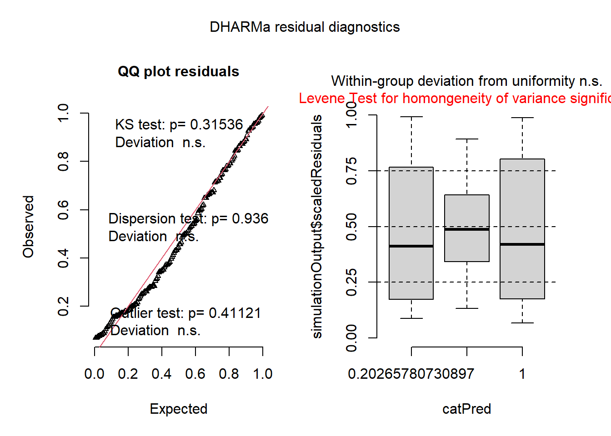
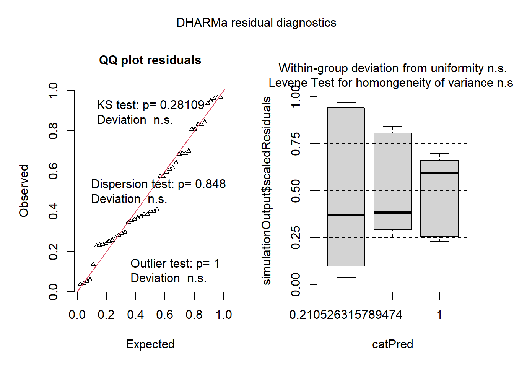
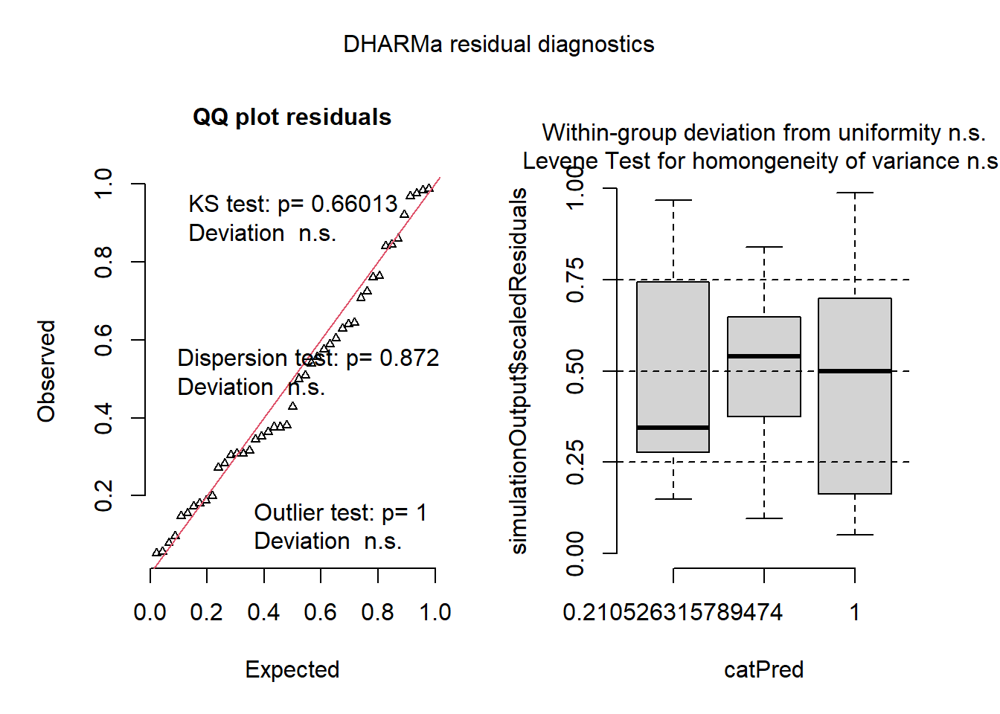
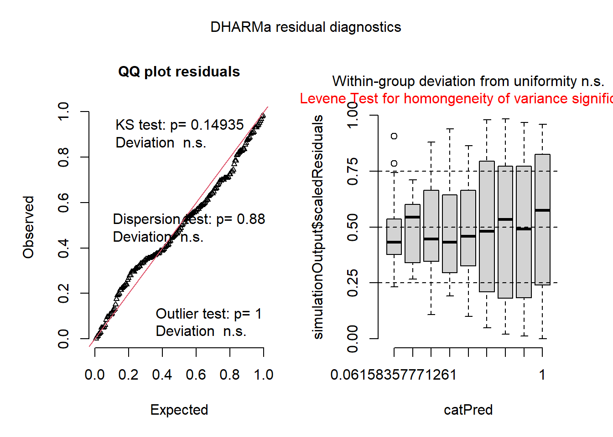
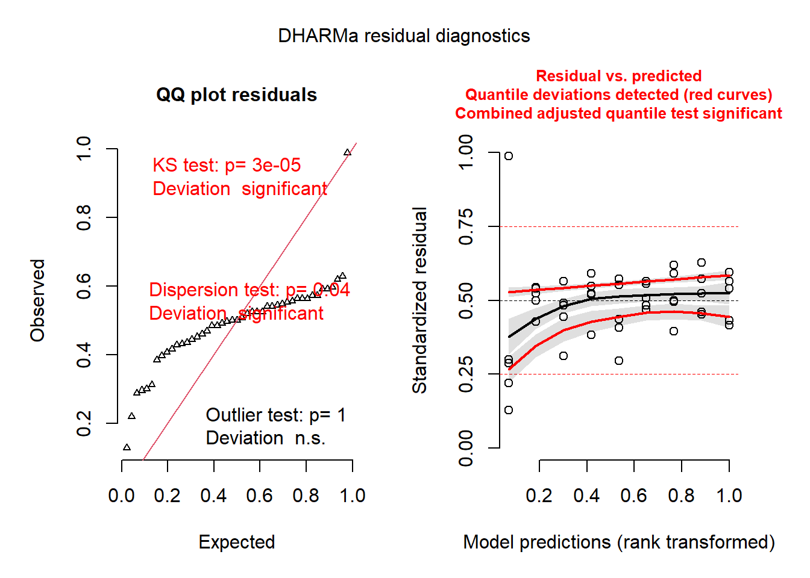
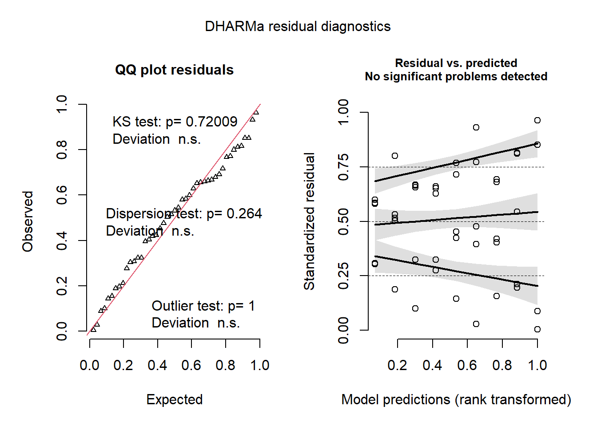

library(readxl)
library(tidyverse)
library(ggpubr)
library(rstatix)
library(lme4)
library(arm)
library(GAD)
library(lmerTest)# Mites data
mites <- read_csv("data/mites.csv")
# Yield and Efficacy data
efficacy <- read_excel("data/efficacy.xlsx")mites <- mites %>%
group_by(Week, Treatment, Conc.) %>%
mutate(Rep = row_number())# Model
lme <- lmer(log(value) ~ Treatment + (1|Rep) + (1|Conc.) + (1|Week), data=mites)
# Residuals
library(DHARMa)
simres <- simulateResiduals(lme)
plot(simres)
# ANOVA
anova(lme)Multiple comparison
library(emmeans)
library(multcomp)
means <- emmeans(lme, pairwise ~ Treatment)
cld(means$emmeans, Letters = LETTERS)Scott-Knott
library(ScottKnott)
skm <- with(mites,
SK(x= Treatment,
y=log(value),
model='y ~ x',
which='x'))
skm <- summary(skm)## Levels Means SK(5%)
## Thymol 3.151771 a
## Formic Acid 65% 2.936846 b
## Oxalic Acid 2.914691 b# Model
lme <- lmer(Efficacy ~ Treatment + (1|Replication) + (1|Conc.), data = efficacy)
# Residuals
simres <- simulateResiduals(lme)
plot(simres)
# ANOVA
anova(lme)Multiple comparison
means <- emmeans(lme, pairwise ~ Treatment)
cld(means$emmeans)Scott-Knott
ske <- with(efficacy,
SK(x= Treatment,
y=Efficacy,
model='y ~ x',
which='x'))
ske <- summary(ske)## Levels Means SK(5%)
## Oxalic Acid 90.48645 a
## Thymol 76.74475 b
## Formic Acid 65% 69.29151 c# Model
lme <- lmer(Honey_Yield ~ Treatment + (1|Replication) + (1|Conc.), data = efficacy)
# Residuals
simres <- simulateResiduals(lme)
plot(simres)
# ANOVA
anova(lme)Multiple comparison
means <- emmeans(lme, pairwise ~ Treatment)
cld(means$emmeans)Scott-Knott
sky <- with(efficacy,
SK(x= Treatment,
y=Honey_Yield,
model='y ~ x',
which='x'))
sky <- summary(sky)## Levels Means SK(5%)
## Oxalic Acid 13.333333 a
## Formic Acid 65% 7.733333 b
## Thymol 7.266667 b# Model
lme <- lmer(log(value) ~ Treatments + (1|Rep) + (1|Conc.) + (1|Week), data=mites)
# Residuals
simres <- simulateResiduals(lme)
plot(simres)
# ANOVA
anova(lme)Multiple comparison
means <- emmeans(lme, pairwise ~ Treatments)
cld(means$emmeans, Letters = LETTERS)Scott-Knott
skm <- with(mites,
SK(x= Treatments,
y=log(value),
model='y ~ x',
which='x'))
skm <- summary(skm)## Levels Means SK(5%)
## Thymol 4gm 3.588200 a
## Thymol 2gm 3.338636 a
## Oxalic Acid 4.20% 3.173607 b
## Oxalic Acid 3.2% 3.136599 b
## Formic Acid 65% 15ml 3.087936 b
## Formic Acid 65% 10ml 2.887778 c
## Formic Acid 65% 20ml 2.834824 c
## Thymol 6gm 2.528478 d
## Oxalic Acid 2.10% 2.433866 d# Model
lme <- lmer(Efficacy ~ Treatments + (1|Replication) + (1|Conc.), data = efficacy)
# Residuals
simres <- simulateResiduals(lme)
plot(simres)
# ANOVA
anova(lme)Multiple comparison
means <- emmeans(lme, pairwise ~ Treatments)
cld(means$emmeans)Scott-Knott
ske <- with(efficacy,
SK(x = Treatments,
y = Efficacy,
model='y ~ x',
which='x'))
ske <- summary(ske)## Levels Means SK(5%)
## Oxalic Acid 3.20% 94.84247 a
## Oxalic Acid 4.20% 92.68076 b
## Formic Acid 65% 20ml 87.65186 c
## Thymol 4gm 86.25991 d
## Oxalic Acid 2.10% 83.93614 e
## Thymol 6gm 72.86288 f
## Thymol 2gm 71.11146 g
## Formic Acid 65% 15ml 66.08801 h
## Formic Acid 65% 10ml 54.13464 i# Model
lme <- lmer(Honey_Yield ~ Treatments + (1|Replication) + (1|Conc.), data = efficacy)
# Residuals
simres <- simulateResiduals(lme)
plot(simres)
# ANOVA
anova(lme)Multiple comparison
means <- emmeans(lme, pairwise ~ Treatments)
cld(means$emmeans)Scott-Knott
sky <- with(efficacy,
SK(x= Treatments,
y=Honey_Yield,
model='y ~ x',
which='x'))
sky <- summary(sky)## Levels Means SK(5%)
## Oxalic Acid 3.20% 16.8 a
## Oxalic Acid 4.20% 13.0 b
## Oxalic Acid 2.10% 10.2 c
## Thymol 6gm 10.2 c
## Formic Acid 65% 15ml 9.2 c
## Formic Acid 65% 20ml 7.6 d
## Formic Acid 65% 10ml 6.4 e
## Thymol 4gm 6.0 e
## Thymol 2gm 5.6 e